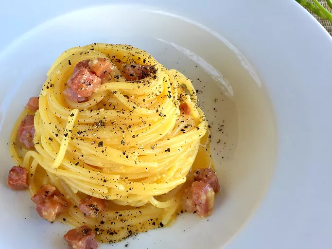

Spaghetti Alla Carbonara

Spaghetti Alla Carbonara
Ingredients
- 1 (14 ounce) package Spaghetti
- 5 ounces Pancetta, cut into small cubes
- 3 egg yolks
- 1 whole egg
- 3/4 cup grated Pecorino-Romano cheese
- Salt and freshly ground black pepper to taste
Steps
- Fill large pot with lightly salted water and bring to a rolling boil. Stir in spaghetti and return to boil. Cook pasta uncovered, stirring occasionally, until al dente, about 10 - 11 minutes. Reserve some of the pasta water and drain.
- Meanwhile, heat a skillet over medium heat; add pancetta, cook and stir until crisp, 5 - 10 minutes.
- Whisk egg yolks and whole egg together in a bowl; whisk in cheese, salt, and pepper until combined.
- Stir in pancetta. Add spaghetti and toss until evenly coated.